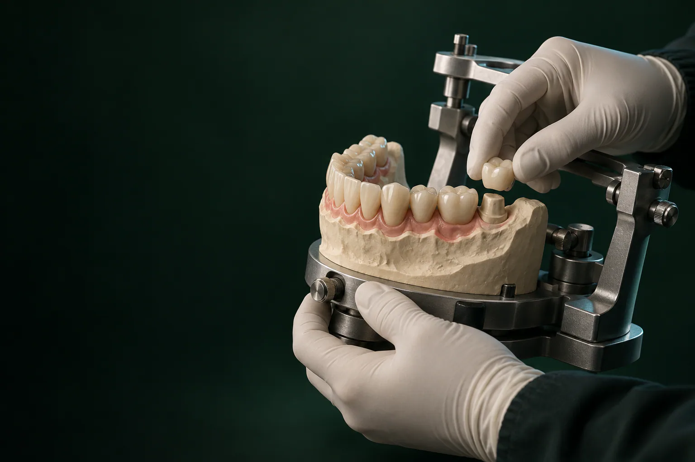

Консультация и диагностика
Приём ортопеда с составлением плана бесплатный, если остаётесь на лечение. Врач осматривает зубы и прикус и при необходимости назначает панорамный снимок (ОПТГ, 1 700 ₽) или КТ зубов (4 500 ₽).

Протезирование зубов в клинике «Умная Медицина. Стоматология» в пос. Удельная (Раменский округ), это восстановление разрушенных и замена отсутствующих зубов, от одного до всей челюсти: коронки, съёмные и бюгельные зубные протезы, протезы на имплантах.
Имеются противопоказания. Необходима консультация специалиста.
Цены начинаются от 22 550 ₽ за временный иммедиат-протез на 1–3 зуба и от 26 400 ₽ за металлокерамическую коронку. Ортопед осмотрит вас, назначит снимки и составит план лечения с фиксированной стоимостью по этапам.
Протезами занимается ортопедическая стоматология. Если перед протезированием нужно вылечить зубы, удалить разрушенные корни или поставить импланты, ортопед согласует план с терапевтом и хирургом на консилиуме.
Имеются противопоказания. Необходима консультация специалиста.
Все протезы делят на три группы: конструкции, которые фиксируют на своих зубах (коронки, мосты, вкладки), съёмные протезы (полные и частичные, в том числе бюгельные) и протезы на имплантах. Что лучше именно вам, зависит не от моды на материал, а от вашей ситуации: сколько зубов нет, в каком состоянии соседние зубы и кость, какую нагрузку будет нести протез.
В таблице: что обычно предлагают в разных ситуациях.
| Ситуация | Что обычно предлагают |
|---|---|
| Зуб разрушен частично | Вкладка, например керамическая E.max |
| Зуб разрушен сильно | Коронка на свой зуб, при необходимости: на культевой вкладке |
| Нет одного зуба | Коронка на имплант или мост на зубы |
| Нет нескольких зубов подряд | Мост, бюгельный или частичный съёмный протез, импланты |
| Зуб только что удалили, промежуток нужно закрыть на время | Иммедиат-протез («бабочка») |
| Нет всех зубов | Полный съёмный протез или протез на имплантах (All-on-4/6/8) |
Что подойдёт именно вам, ортопед решит после осмотра и снимков.
Универсально лучшего варианта нет: конструкция, которая отлично подходит одному пациенту, другому может не подойти совсем. Поэтому на консультации ортопед обычно сравнивает 2–3 варианта по цене, срокам и тому, как они ведут себя со временем.
Плюсы и минусы съёмных и несъёмных конструкций
| Коронки и мосты на своих зубах | Съёмные протезы | Протезы на имплантах | |
|---|---|---|---|
| Как держится | Фиксируется на своих зубах цементом | Держится за счёт прилегания к десне и кламмеров (крючков) за свои зубы | Фиксируется на имплантах в кости |
| Нужно ли обтачивать соседние зубы | Для коронки обтачивают сам зуб, для моста, опорные зубы по бокам | Обычно нет | Нет |
| Нагрузка на кость | Через корни своих зубов | Через десну; под протезом кость продолжает убывать | Через импланты, ближе к естественной |
| Привыкание | Быстрое | Нужно время: дикция, ощущение объёма во рту | Обычно проще, чем к съёмному |
| Уход | Как за своими зубами, плюс ирригатор | Снимать и чистить после еды | Как за своими зубами, плюс ирригатор и профгигиена |
| Цена | Коронка, от 26 400 ₽ | На 3–13 зубов, от 31 900 ₽, бюгельный, от 58 300 ₽ | Коронка на имплант, от 27 400 ₽, имплант, от 19 300 ₽ |
Коронки на зубы восстанавливают сильно разрушенный зуб с крепким корнем. Металлокерамическая коронка стоит от 26 400 ₽, цельноциркониевая: от 34 100 ₽ (подробнее, циркониевые коронки), керамическая, от 34 100 ₽ (см. коронки E.max). Если от зуба осталось мало, сначала ставят культевую вкладку: от 5 500 ₽, она становится основой для коронки. Керамическая вкладка E.max (от 34 100 ₽) восстанавливает частично разрушенный зуб, когда коронка ещё не нужна. Мост на зубы замещает отсутствующий зуб с опорой на соседние, которые обтачивают под коронки.
Съёмные протезы пациент снимает сам, чтобы почистить. Частичный или полный протез на 3–13 зубов стоит от 31 900 ₽. Классические пластиночные протезы делают из акриловой пластмассы, подробнее: на странице акриловый протез. Бюгельный протез с металлическим каркасом, от 58 300 ₽: он меньше по площади и часть нагрузки передаёт на свои зубы. Эластичный протез Acry Free, полный или частичный, от 53 900 ₽. Иммедиат-протез на 1–3 зуба (косметическая пластинка, «бабочка»), от 22 550 ₽: его ставят на время, пока заживает лунка после удаления.
Имплант заменяет корень отсутствующего зуба, а сверху фиксируют коронку или протез. Металлокерамическая коронка на имплант стоит от 27 400 ₽, цельноциркониевая: от 32 900 ₽; установка самого импланта оплачивается отдельно, от 19 300 ₽ (имплантация зубов). При полной потере зубов челюсть восстанавливают протезом на 4, 6 или 8 имплантах: All-on-4, All-on-6 или All-on-8. Временный протез ставят сразу после операции, если импланты достаточно устойчивы, это решает хирург. Постоянный протез изготавливают позже.
В таблице: цены на 17.10.2026. Сколько стоит зубной протез в вашем случае, ортопед скажет после осмотра: в плане лечения стоимость расписана по этапам.
Цены на протезирование в «Умной Медицине»
Цены указаны «от» и не являются публичной офертой. Итоговая стоимость: в плане лечения после осмотра. Цены актуальны на 17.10.2026.
Имеются противопоказания. Необходима консультация специалиста.
Что входит в каждый этап и итоговую сумму, врач запишет в план лечения до начала работы. Итоговую стоимость определяют несколько вещей: материал конструкции, число единиц, подготовка опорных зубов (лечение каналов, культевые вкладки), объём диагностики и нужны ли временные коронки на период изготовления. Поэтому цена протезов одного и того же вида у двух пациентов может отличаться.
Если важно уложиться в бюджет, начните с плана: ортопед подберёт материал под задачу, например, для жевательных зубов, где эстетика менее важна, может подойти металлокерамика. Снизить расходы помогают скидка 10% при оплате лечения в день консультации, рассрочка и налоговый вычет; условия скидки и рассрочки: на странице стоматология в рассрочку. План с фиксированной стоимостью по этапам позволяет заранее знать итоговую сумму.
Протезирование нужно, если:
Сначала лечат, потом протезируют: протез ставят только на здоровую основу. Если есть острое воспаление, нелеченый кариес или пульпит, сначала проводят лечение зубов, а при необходимости: лечение каналов зуба. Иначе воспаление под коронкой может потребовать снять готовую конструкцию.
Противопоказания к самому протезированию чаще временные: острые воспаления и обострение хронических заболеваний. У отдельных конструкций есть свои ограничения: мост не опирают на подвижные или ослабленные зубы, а бюгельному протезу нужны устойчивые опорные зубы. При аллергии на металл подбирают безметалловые конструкции: цирконий, E.max, Acry Free. У имплантации свои противопоказания, о них: на странице имплантация зубов. Окончательное решение принимает врач после осмотра.
Имеются противопоказания. Необходима консультация специалиста.
Понадобится несколько визитов. Схема для всех конструкций одна, меняется только число этапов.
Приём ортопеда с составлением плана бесплатный, если остаётесь на лечение. Врач осматривает зубы и прикус и при необходимости назначает панорамный снимок (ОПТГ, 1 700 ₽) или КТ зубов (4 500 ₽).
В сложных случаях план обсуждают вместе ортопед, хирург и терапевт.
План лечения со стоимостью каждого этапа.
Лечение зубов и каналов, удаление разрушенных корней, культевые вкладки. Если протез будет на имплантах: КТ, 3D-планирование, хирургический шаблон (от 24 200 ₽), установка имплантов.
Временная коронка на время изготовления постоянной: пластмассовая, от 2 750 ₽, фрезерованная CAD/CAM, от 6 600 ₽. Она защищает обточенный зуб и сохраняет внешний вид.
Классические слепки или интраоральное сканирование (2 200 ₽): цифровая копия зубов без оттискной массы во рту.
Их делает зубной техник в лаборатории по оттискам или цифровому скану.
Врач проверяет посадку, прикус и цвет, при необходимости конструкцию дорабатывают.
Коронки и мосты фиксируют на цемент, а съёмную конструкцию ортопед надевает, проверяет и учит снимать и надевать.
В период привыкания протез может натирать: это поправимо на коррекции.
Сроки и цену каждого этапа врач распишет в плане лечения.
Записаться на консультациюСроки зависят от вида протеза, объёма подготовки и того, нужны ли импланты. Одиночную коронку и полный съёмный протез делают за разное число визитов, а постоянный протез на имплантах изготавливают после их приживления. При All-on-4/6/8 временный протез ставят сразу после операции, если импланты достаточно устойчивы. Постоянную коронку на имплант ставят в среднем через 2 месяца на нижней челюсти и через 4 месяца на верхней. Точный график и число визитов для вашей конструкции врач распишет в плане лечения.
У верхней челюсти есть особенность: нёбо. Полная съёмная конструкция перекрывает его: так она лучше держится, но к ней дольше привыкают, а ощущение температуры и вкуса пищи может меняться.
Если часть своих зубов на верхней челюсти осталась, нёбо меньше перекрывает бюгельный протез: вместо широкой пластины у него узкая металлическая дуга, но нужны свои опорные зубы. Совсем не закрывают нёбо конструкции на имплантах. Так что зубные протезы без неба: это бюгельные протезы или протезы с опорой на импланты.
Жевательные зубы принимают основную нагрузку, поэтому для них важна прочность: подходят металлокерамика и цирконий. Для передних зубов на первом месте эстетика: E.max и цирконий с керамической облицовкой хорошо передают прозрачность эмали.
Полные зубные протезы нужны, когда на челюсти не осталось ни одного зуба: это съёмный протез или протез на имплантах.
Из новых технологий, если обойтись без рекламных обещаний, стоит назвать три направления: эластичные термопластичные протезы (Acry Free) без металлических кламмеров; коронки по цифровому скану, выточенные на фрезерном станке (CAD/CAM); протезирование на имплантах без опоры на десну. Новизна сама по себе не делает протез подходящим: выбирают по показаниям.
Срок службы зависит не только от вида протеза. На то, сколько прослужит конструкция, влияют:
Если вы знаете, что сжимаете или скрипите зубами во сне, скажите об этом ортопеду: это учитывают при выборе материала и конструкции. Ориентировочный срок службы для вашего случая врач объяснит на консультации, а признаки износа увидит на плановом осмотре.
Временные конструкции: пластмассовые коронки, иммедиат-протез, рассчитаны только на период лечения и потом заменяются постоянными.
Ортопед восстанавливает форму разрушенных зубов и замещает отсутствующие протезами: от одной коронки до протеза на всю челюсть. Врач подбирает конструкцию, готовит зубы, снимает оттиски, проверяет прикус и сдаёт готовую работу.
Лечение ортопед планирует не в одиночку: вместе с хирургом он решает, где ставить импланты, а со стоматологом-терапевтом, какие зубы можно сохранить и вылечить под коронки.
Команда для сложных случаев: хирурги-имплантологи Хлудневский Михаил Сергеевич и Раджабов Азамат Назирович, стоматолог-терапевт, эндодонтист Читайкин Артём Сергеевич, лечение каналов перед протезированием.

Главный врач, ортопед
Протезирование и восстановление зубов, протезы на имплантах
Записаться к врачу
Ортопед
Восстановление зубов и протезирование, эстетичные коронки
Записаться к врачу
Хирург, имплантолог
Имплантация, удаление зубов и подготовка к имплантации
Записаться к врачу
Хирург, имплантолог
Удаление зубов и имплантация, хирургия в сложных случаях
Записаться к врачу
Терапевт, эндодонтист
Лечение кариеса и каналов, сохранение зубов
Записаться к врачуОтзывы о клинике и врачах: на ПроДокторов, Яндекс Картах и 2ГИС.
Пенсионерам и другим льготным категориям бесплатное протезирование по региональным программам оформляют через государственные поликлиники и органы соцзащиты. Если вы лечитесь в нашей клинике, снизить расходы помогут рассрочка, социальный вычет и скидка 10% за оплату в день консультации. Вычет может оформить и родственник, который оплатил лечение, например, сын или дочь за лечение родителя.
От привыкания и ежедневного ухода зависит, насколько удобно вам будет с новой конструкцией и как долго она прослужит. Уход за зубными протезами разный для несъёмных и съёмных конструкций, а привыкать заметнее всего приходится к съёмным.
Привыкание. Как носить протез в первые дни, объяснит врач: придерживайтесь его схемы и не откладывайте протез «на потом», чем регулярнее вы им пользуетесь, тем быстрее привыкают язык и щёки. Чёткая дикция возвращается быстрее, если читать вслух. Если протез натирает, не подпиливайте его сами: запишитесь на коррекцию к ортопеду.
Как надевать и снимать. Это ортопед показывает при сдаче: как снимать и надевать съёмную конструкцию без усилия, не повредив кламмеры. Снимать протез удобнее над раковиной с водой или над полотенцем: при падении на кафель он может треснуть.
Уход за несъёмными конструкциями. Коронки, мосты и конструкции на имплантах чистят как свои зубы: щёткой два раза в день, а промежутки под мостом и вокруг имплантов, ершиками и ирригатором. Регулярная профессиональная чистка зубов: по рекомендации врача.
Уход за съёмными протезами. Их снимают и промывают после еды, а раз в день чистят щёткой и специальными средствами. Обычная абразивная зубная паста царапает пластмассу. Хранят протезы в контейнере, сухими или в воде: как рекомендовал врач для вашего материала. Горячей водой их не моют: пластмасса может деформироваться.
Когда идти к врачу. Протез причиняет боль, на нём появилась трещина, он шатается или перестал плотно прилегать. Если протез болит или натирает, не терпите: натёртость без коррекции может перейти в язву на слизистой.
Склеивать протез самостоятельно не стоит: бытовой клей не предназначен для полости рта, шов получается неровным, конструкция хуже прилегает и натирает. Сломанный протез лучше показать ортопеду: ремонт выполняют в клинике, починка и перебазировка съёмного протеза стоит от 13 750 ₽. Перебазировка нужна, когда десна под протезом меняется и он начинает шататься: его внутреннюю поверхность подгоняют заново. Подробнее: на странице ремонт съёмных протезов.
Лучшего протеза для всех нет. Выбор зависит от числа отсутствующих зубов, состояния опорных зубов и кости, ваших ожиданий по эстетике и бюджета. На консультации ортопед сравнит 2–3 варианта по цене и сроку службы.
Несъёмные: коронки, мосты, вкладки. Съёмные: полные и частичные, в том числе бюгельные, эластичные, пластиночные и иммедиат-протезы. Протезы на имплантах: от одиночной коронки до протеза на всю челюсть по протоколу All-on-4/6/8.
Коронка из металлокерамики стоит от 26 400 ₽, коронка на имплант, от 27 400 ₽. Из съёмных конструкций протез на 3–13 зубов обойдётся от 31 900 ₽, бюгельный: от 58 300 ₽. Точная сумма: в плане лечения после осмотра и снимков. Консультация ортопеда с планом лечения: 0 ₽, если остаётесь на лечение.
Задачами. Ортопед восстанавливает и замещает зубы коронками и протезами, а ортодонт исправляет положение зубов и прикус брекетами и элайнерами (исправление прикуса). Если коротко, ортодонт перемещает свои зубы, а ортопед восстанавливает утраченные. Иногда они работают вместе: например, когда перед протезированием нужно выровнять зубы.
Носите протез по схеме врача, читайте вслух, чтобы быстрее вернулась чёткая дикция, и приходите на плановые коррекции. Сколько займёт привыкание, зависит от конструкции: к несъёмной обычно привыкают быстрее, чем к съёмной. Чего ожидать в вашем случае, ортопед расскажет при сдаче протеза.
Не терпеть и не подпиливать протез самому: так легко нарушить его прилегание. Запишитесь на коррекцию к ортопеду: врач найдёт место, которое давит, и аккуратно его поправит.
Несъёмные конструкции чистят как свои зубы, дополнительно, ирригатор, ершики и профгигиена. Съёмные снимают и чистят после еды специальными средствами, хранят в контейнере и не моют горячей водой.
Самому, нельзя: бытовой клей не предназначен для полости рта, шов получается неровным, протез хуже прилегает и натирает. Починка и перебазировка съёмного протеза в клинике: от 13 750 ₽.
Бесплатное протезирование по региональным программам оформляют через государственные учреждения. В нашей клинике: рассрочка, налоговый вычет и скидка 10% при оплате в день консультации; условия подскажет администратор.
Да, оформив социальный вычет на лечение. Клиника выдаёт справку об оплате медицинских услуг для налоговой. Заявление подают в налоговую по месту жительства или через личный кабинет налогоплательщика.
Запишитесь на консультацию: план лечения с ценой по этапам
Имеются противопоказания. Необходима консультация специалиста.
Адрес: Московская обл., Раменский округ, пос. Удельная, ул. Громова, 10/2. Протезирование зубов в Раменском округе мы проводим здесь, в Удельной; филиал сети в Быково: многопрофильный. Подробнее о клинике: на странице стоматология в Удельной.
Клиника находится рядом с Жуковским, и к стоматологу-ортопеду сюда удобно добираться со всего Раменского округа. Рядом с клиникой: Малаховка, Быково, Ильинский, Островцы, Красково, Октябрьский и Родники; приезжают к нам и из Люберец, Раменского и Балашихи.
На протезирование в Удельную можно приехать и из Лыткарино или Бронниц.
От платформы «Удельная» (МЦД-3) до клиники можно дойти пешком, из Жуковского и Раменского ходят автобусы. Если едете на машине, у клиники есть бесплатная парковка.
Имеются противопоказания. Необходима консультация специалиста.
пгт Удельная, Раменский округ, рядом с Жуковским.
Ежедневно с 9:00 до 21:00
+7 495 150-36-15К нам ездят из Жуковского, Раменского, Быкова, Ильинского, Красково, Малаховки, Островцов, Люберец и Балашихи.
Перезвоним за 5 минут, подберём врача и удобное время.
Оставьте номер, администратор перезвонит и ответит на вопросы.
Подойдёт КТ, панорама, прицельный снимок или фото плана лечения из другой клиники. Врач посмотрит и ответит в течение рабочего дня. Это бесплатно.
Хирург, ортопед и терапевт осмотрят вас вместе, сделаем КТ. Консультация бесплатная, если остаётесь на лечение. Стоимость лечения врач назовёт после осмотра.
Консультацию ведут вместе
ХирургМихаилОртопедЕвгенийТерапевтАртёмПервый визит 0 ₽, если остаётесь на лечение
Хирург, ортопед и терапевт посмотрят ваш случай вместе и предложат два-три варианта с ценой. Оставьте номер, администратор перезвонит и подберёт время.
Скидка 10% на лечение, если оплатить его в день консультации
Перезвоним за 5 минут, ежедневно с 9:00 до 21:00.
Администратор перезвонит за 5 минут с номера +7 495 150-36-15.
Это демонстрация: на рабочем сайте заявка уйдёт в amoCRM с названием формы, поводом, страницей и UTM-метками.